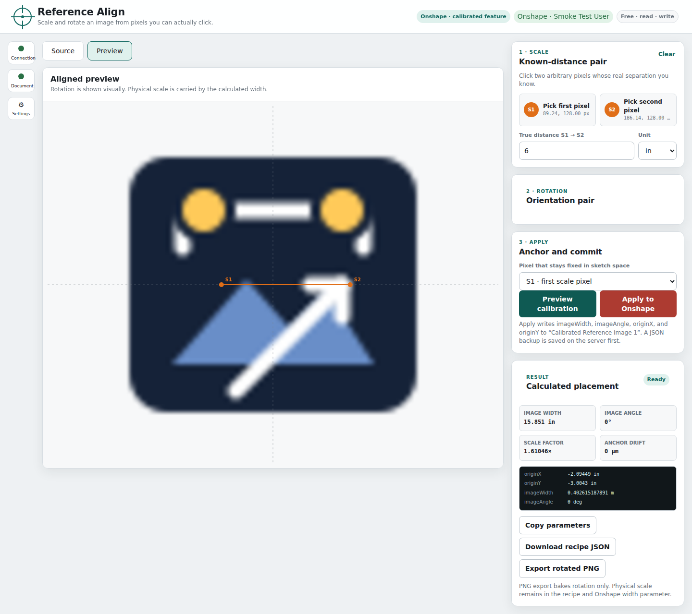

Free · MIT licensed · Windows / macOS / Linux
Get your reference image
the right size and angle.
Reference Align is a local desktop companion for Onshape. Pick two pixels whose real distance you know, choose the image direction, preview, then apply. Scale and rotation can use different pairs of points.
Download desktop ZIP Start here
No Node, npm, programming or web-hosting setup. Each download includes the runtime, a launcher, and an offline guide.

From image to calibrated reference
- Extract your platform's ZIP and open its START-REFERENCE-ALIGN launcher.
- Use the browser wizard to connect your Onshape account, then paste your Part Studio URL.
- Load an image, choose its plane, and install the calibrated reference feature.
- Pick your scale and direction points, preview, and apply. Writes retain backups.
For a Mac, choose Apple Silicon for M-series chips or Intel for an Intel Mac. Windows and Linux downloads target Intel/AMD 64-bit computers.
Before you launch
The app is unsigned/not notarized, so your operating system may ask whether to allow it. Only run a download from a source you trust. The included guide explains per-app prompts without disabling system security.
Connecting requires an Onshape account and a document read/write API key; the wizard explains how to create it. You can try local previews without connecting. Native Onshape Insert Image calibration is not supported; placement uses the included custom feature.
Read each release's verification notes for tested platforms and any limits. Automated tests do not replace an unaided user trial.